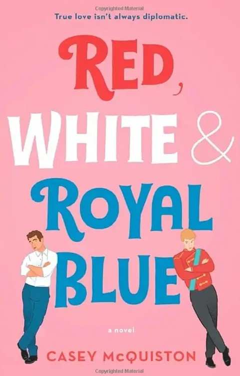

| The Seven Husbands of Evelyn Hugo | To Kill a Mockingbird | Pride and Prejudice |
| Written by Jenkins Reid | Written by Harper Lee | Written by Jane Austen |
| Date Published: June 13, 2017 | Date Published: July 11, 1960 | Date Published: January 28, 1813 |
| Evelyn Hugo was an iconic Hollywood actress, just as notoriously remembered for her seven marriages as she was for her movie performances. Finally ready to tell her story, Evelyn Hugo chooses a little-known journalist named Monique, who goes to Evelyn's luxurious apartment to hear the truth behind Evelyn's lifetime of friendships, ambitions, and many loves. | Considered one of the greatest novels of all time, "To Kill a Mockingbird" is an unforgettable historical fiction novel from 1960 that follows young Jean Louise Finch during a time of great racial inequality in her community. Her father, Atticus Finch, is a lawyer defending a Black man wrongly accused of a terrible crime as he faces a community desperate for a guilty conviction. | "Pride and Prejudice" is a cherished, classic Jane Austen romance between Elizabeth Bennet and Mr. Darcy. Loved for their unique relationship comprised of witty banter and flirting, Elizabeth and Mr. Darcy fall for each other in this story of class, wealth, and the duty of marriage. |
|  | ||
| The Song of Achilles | The Silent Patient | Red, White & Royal Blue |
| Written by Madeline Miller | Written by Alex Michaelides | Written by Casey McQuiston |
| Date Published: September 20, 2011 | Date Published: February 5, 2019 | Date Published: May 14, 2019 |
| In this Greek mythology-inspired tale, Patroclus is an awkward young prince, exiled by his father because of a misunderstanding when he meets the legendary Achilles. As the two form a unique relationship, Helen of Sparta is kidnapped and Achilles, along with all the heroes in Greece, joins the cause against Troy as they face a choice between love and fate. | Alicia Berenson had a seemingly perfect life with a painting career, a beautiful home, and a photographer husband until one night her husband returned home and Alicia shot him five times in the face and never spoke again. As Theo Faber, a criminal psychotherapist, attempts to work with Alicia to get her to talk, his own twisted motives emerge in this gripping psychological thriller with many versions of the truth. | First Son Alex Claremont-Diaz has a long-running nemesis: Prince Henry. When the tabloids catch the two in a confrontation, the plan for damage control includes staging a fake friendship between the boys in this fun, fan-favorite Queer romance. |